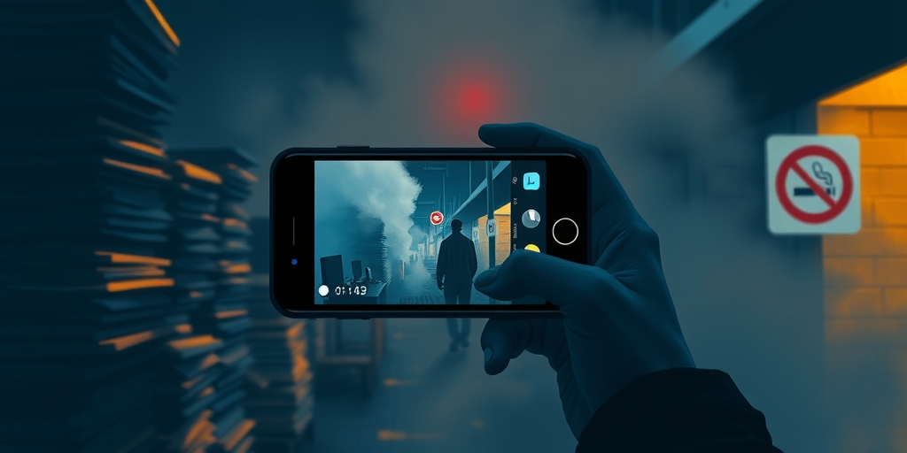

小汪老师的成长洞察 · 属于你的成长专栏
手机举起来的那一刻，两个陌生人的权力关系瞬间逆转。一个人手里夹着烟，站在商场外划定的吸烟区。另一个人镜头对准他的脸，声音高亢：你知道二手烟致癌吗？这个画面被配上正义的标题，传到三个平台。评论区里有人叫好，有人反问：法律允许他在这里抽烟，你凭什么冲上去？

2024年底，国务院修改了《公共场所卫生管理条例》。删去了饭馆、咖啡厅、酒吧等场所的列举。社交媒体上出现大量误解，以为这些地方从此不禁烟了。恐慌催生了一类新视频：普通人拿着手机，冲到陌生人面前制止抽烟。
这些视频有共同的语法。机位永远稳，台词掷地有声。发布者会在评论区频繁互动，回复每一条支持。他们不只是制止抽烟。他们在制造内容。算法不区分愤怒是正义的还是表演性的。它只计算停留时长和互动率。一个对着陌生人怒吼的视频，传播力比科普二手烟危害高十倍。
中国没有全国统一的公共场所禁烟法。条例草案2014年就送审了，拖了十几年，至今未通过。各地法规差异极大，执法力度参差不齐。有共识，没法律。这个灰色地带给了民间执法者完美的发挥空间。
如果法律清晰，轮不到普通人举着手机出警。正因为法律模糊，每个人都可以声称自己在填补空白。更微妙的是，出警者的行为越过了法律边界。他们在合法吸烟区训斥别人。在酒吧门口夺走烟头踩灭。在街边远远喊话。这些地方，法律没说不能抽烟。但他们不在乎法律怎么说。他们执行的是自己心中的道德律令。
哲学家Tosi和Warmke提出过一个概念：Moral Grandstanding，道德表演。核心不是伸张正义，而是用道德语言进行自我推销。驱动力是被认可的欲望。希望别人觉得自己的道德纯度比别人高。
禁烟出警里能看到道德表演的全部模式。堆砌：所有人都知道抽烟有害，还要冲上去说我也是这么认为的，只为表明我在正确的一边。升级：上一个人说抽烟不好，我就要说抽烟等于谋杀，用极端表述压过前一个人。制造罪名：在根本不构成问题的地方强行发现道德问题。在合法吸烟区指责别人，就是最典型的制造罪名。
当吸烟从健康问题变成道德问题，容忍度急剧下降。不再接受减少伤害的中间方案，只接受绝对禁止。吸烟者不再是普通人，成了道德上有缺陷的坏人。贴上这个标签之后，对他们做什么都可以。
吸烟区是典型的检测式方案。承认吸烟行为存在，用空间隔离管理风险。在边界内允许自由。这是务实的社会治理。出警者的逻辑是约束式的。他们对允许存在本身感到不适。认为任何吸烟行为都该被消灭，不论在不在吸烟区。
他们追求道德的无菌状态。只要还有一个人在抽烟，社会就是不干净的。这两种逻辑的冲突，不是关于烟的。是关于完美到底可不可能。检测式思维接受不完美，在边界内管理它。约束式思维拒绝不完美，追求彻底消除。当一个人用约束式思维管理别人的行为，他在宣告：我的道德标准高于法律，高于社会的共识边界。
快速城市化的社会里，道德出警特别盛行。传统社区瓦解，熟人社会变成陌生人社会。人们失去了判断自己是不是好人的传统坐标系。在村里，帮邻居收麦子就知道自己是好人。在城里，跟邻居三年没说过话。社交媒体的道德表演提供了一种廉价替代。不需要帮助任何人，只要公开表达愤怒，就能获得我是好人的心理确认。
写给你的话
出警者越界越远，因为法律给不了他们想要的东西。如果他们只想禁烟，应该去推动立法，举报违规场所。但他们选择拍视频、训斥陌生人。后者有即时反馈。评论区里每一条干得好，都是多巴胺补给。这引向一个更不舒服的问题：你上一次在社交媒体上表达愤怒，是真的在乎那个议题，还是在乎别人觉得你在乎？当愤怒成为自我认证的工具，愤怒本身就变得可疑。不是因为立场错了，而是因为驱动力歪了。
参考资料
• The Economic Times: Psychology says adults who learned to depend on no one as children don't grow into self-sufficient adults; they grow into people who confuse asking for help with weakness, and slowly build a life no one else knows how to step into (Jun 2026)
• The Economic Times: In 1972, children watched adults hit an inflatable doll, and psychology saw how easily aggression can be copied (Jun 2026)
小汪老师的成长洞察 · 属于你的成长专栏